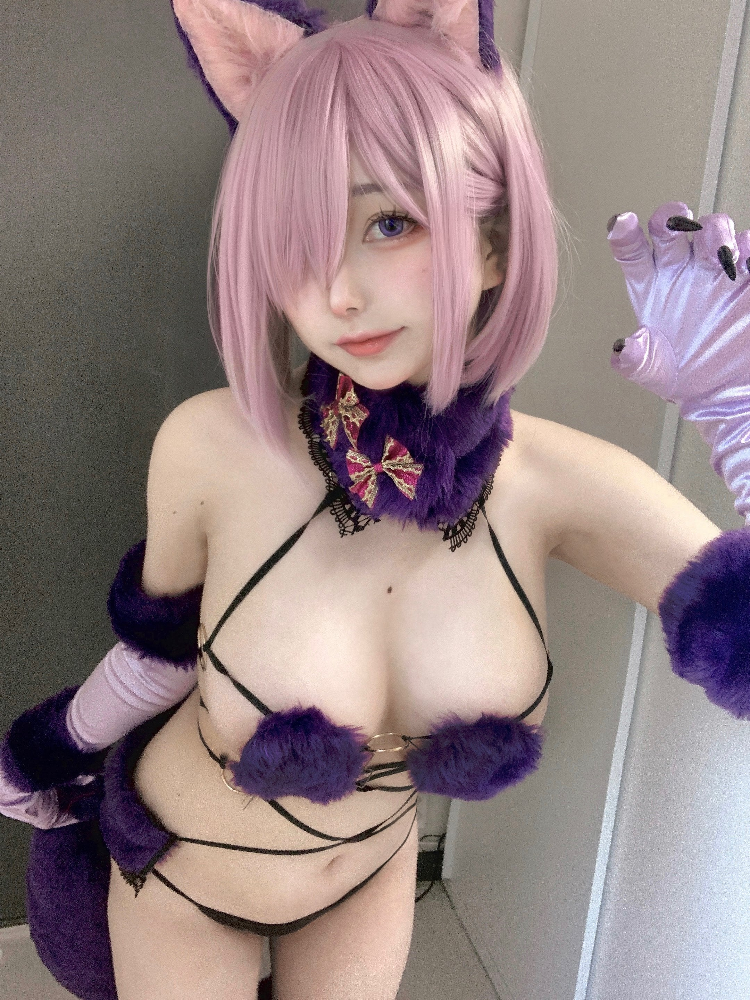
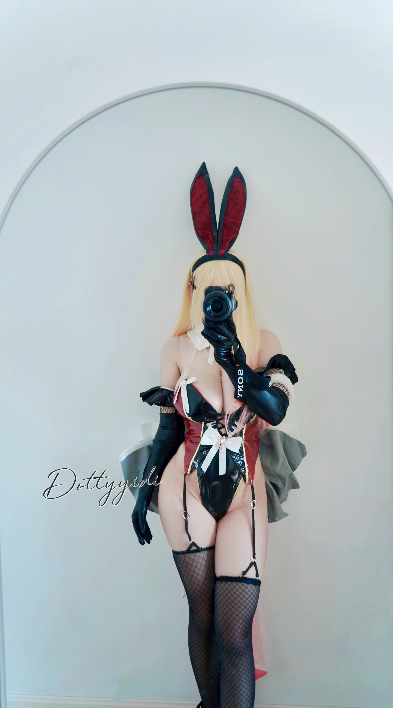
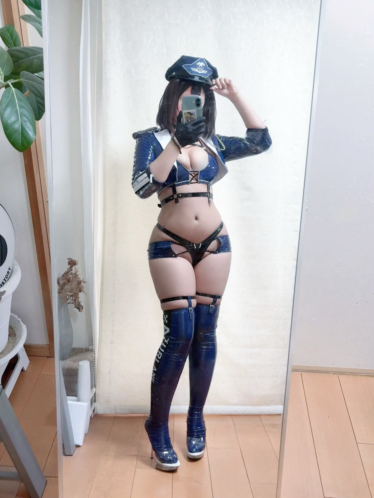

36 · 13 · 8 시간 전 · 원문



수집 당시 댓글 13개
하락장 · 1 일 전
본인이신가요.오늘.날씨.좋습니다.설악산에서.차.한잔.하시지요
맛있는고구마 · 1 일 전
사귀고싶다 ㄷㅈㄷ
갠톡 ㄱㄱ
극한의씹쌉거유폭유육덕충 · 21 시간 전
우리 집으로 와
착한말착한말 · 14 시간 전
와 두쫀쿠
라다 · 14 시간 전
도리좀
elysia · 10 시간 전
이남놀
YinGan · 10 시간 전
이리로 들어오도록 해
아마존새개들끼 · 10 시간 전
목가린건 다 못믿겠음
↳ 답글 · 아니이개외안되 · 1 시간 전
번째가슴 · 9 시간 전
무슨일 함??
보안관제?? 편의점 알바??
아다만타이트 · 8 시간 전
이상하면치과가야지 · 7 시간 전
끄으이으응 · 5 시간 전
와

본인이신가요.오늘.날씨.좋습니다.설악산에서.차.한잔.하시지요